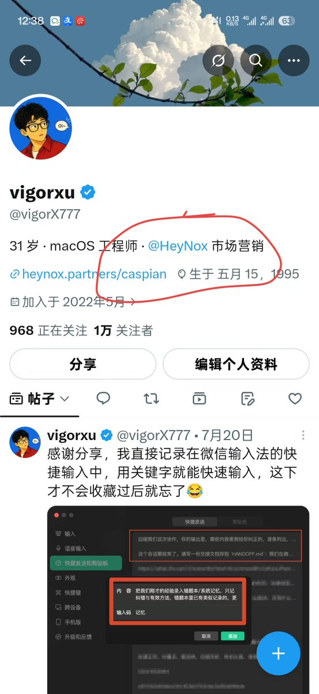
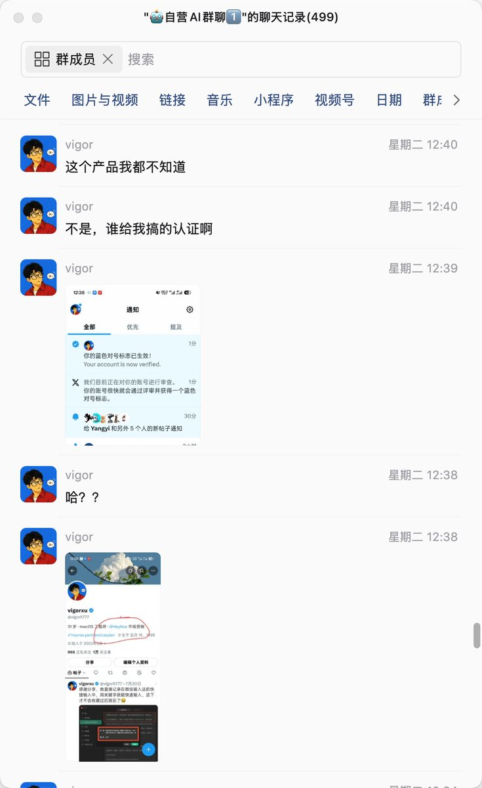
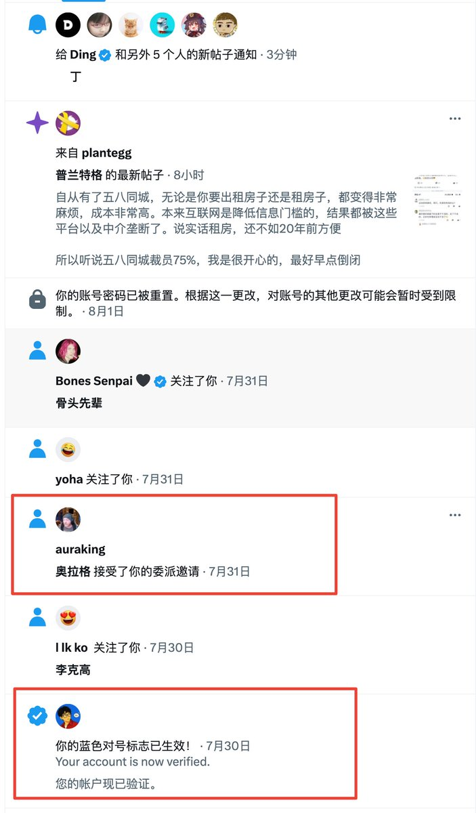
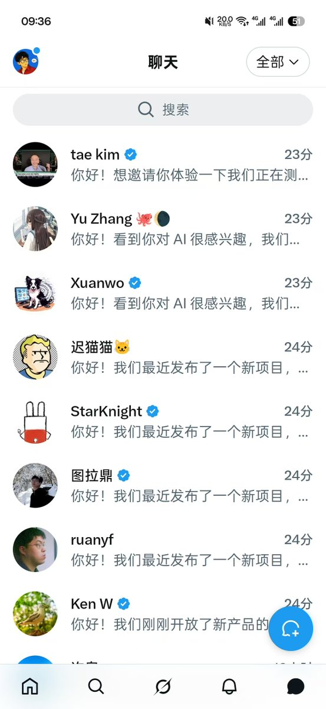

Wilf Lin
@Wilf_Lin
@vigorX777 去看一下X里面的应用授权，你可能有OAuth给其他应用过发件或者修改账号信息的授权




vigorxu
@vigorX777
💢 我的账号前几天也被盗了，最开始是莫名其妙多了一个产品的认证，然后被委托给了另一个账号，起初我不知道是什么，然后这几天发现私信一直有消息，点进去一看全是找了各个大V私聊发产品推广的信息，我真的是服了。
现在已经重置密码 ，也加了双重认证了，不知道后面还会不会再遇到这样的事情🥲 https://t.co/4Id3U8Cd4y https://t.co/cq7Vq8C307